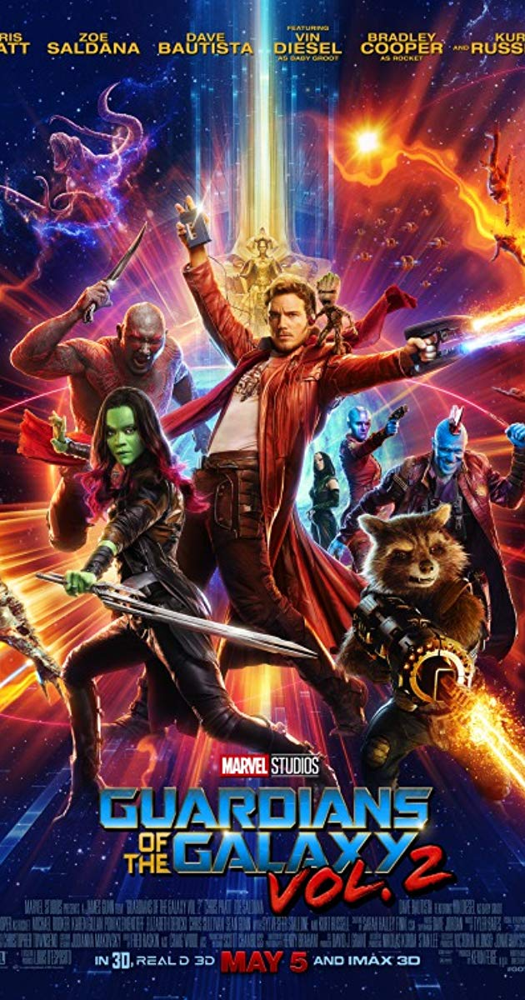

|  |
Movie Name: |
Guardians of the Galaxy vol-2 (2017) |
|
In 2014, Peter Quill, Gamora, Drax, Rocket, and Baby Groot are renowned as the Guardians of the Galaxy. Ayesha, leader of the Sovereign race, has the Guardians protect valuable batteries from an inter-dimensional monster in exchange for Gamora's estranged sister Nebula, who was caught attempting to steal the batteries. After Rocket steals some for himself, the Sovereign attacks the Guardians ship with a fleet of drones. The drones are destroyed by a mysterious figure, but the Guardians crash-land on a nearby planet. The figure reveals himself as Quill's father, Ego. He invites Quill, Gamora, and Drax to his home planet, while Rocket and Groot remain behind to repair the ship and guard Nebula. Ayesha hires Yondu Udonta and his crew, who have been exiled from the greater Ravager community for child trafficking, to recapture the Guardians. They capture Rocket, but when Yondu hesitates to turn over Quill, whom he raised, his lieutenant Taserface leads a mutiny with help from Nebula. Taserface imprisons Rocket and Yondu aboard Yondu's ship and executes his loyalists while Nebula leaves to track down and kill Gamora, whom she blames for all the torture inflicted on her by their father, Thanos. While imprisoned, Rocket and Yondu bond. Groot and Yondu's loyalist Kraglin free Rocket and Yondu, and they destroy the ship and its crew as they escape, though not before Taserface warns the Sovereign. Ego, a god-like Celestial that manipulated the matter around its consciousness to form his "home" planet, explains that he projected a humanoid guise to travel the universe and discover a purpose, eventually falling in love with Quill's mother Meredith. Ego hired Yondu to collect the young Quill after Meredith's death, but the boy was never delivered and Ego has been searching for his son ever since. He teaches Quill to manipulate their Celestial power. Nebula arrives at Ego's planet and tries to kill Gamora, but the pair reach an uneasy alliance when they discover caverns filled with skeletal remains. Ego reveals to Quill that in his travels he planted seedlings on thousands of worlds which can terraform them into new extensions of himself, but they can only be activated by the combined power of two Celestials. To that end, he impregnated countless women and hired Yondu to collect the children, but killed them all when they failed to access the Celestial power. Under the influence of Ego's power, Quill helps him activate the seedlings, which begin to consume every world. However, Quill fights back when Ego reveals that he caused Meredith's death due to the distraction she posed. Mantis, Ego's naive empath servant, grows close to Drax and warns him of Ego's plan. Gamora and Nebula also learn of the plan just as Rocket, Yondu, Groot and Kraglin arrive. The reunited Guardians reach Ego's brain at the planet's core, and fight the Sovereign's arriving drones. Rocket makes a bomb using the stolen batteries, which Groot plants on Ego's brain. Quill battles Ego with his newfound Celestial powers in order to distract him enough to allow the other Guardians and Mantis to escape. The bomb explodes, killing Ego and disintegrating the planet. Yondu sacrifices himself to save Quill, who realizes that the reason Yondu kept him was to spare him from the fate of Ego's other progeny, and that Yondu was Quill's true "daddy". Having reconciled with Gamora, Nebula still chooses to leave and attempt to kill Thanos. The Guardians hold a funeral for Yondu, which is attended by dozens of Ravager ships, acknowledging Yondu's sacrifice and accepting him again as a Ravager. In a series of mid- and post-credit scenes, Kraglin takes up Yondu's telekinetic arrow and control-fin; Ravager leader Stakar Ogord reunites with his ex-teammates; Groot starts growing back to normal size, exhibiting typical teenage behavior in the process; Ayesha creates a new artificial being with whom she plans to destroy the Guardians, naming him Adam and a group of uninterested Watchers listen to their informant discussing several experiences on Earth. |
||